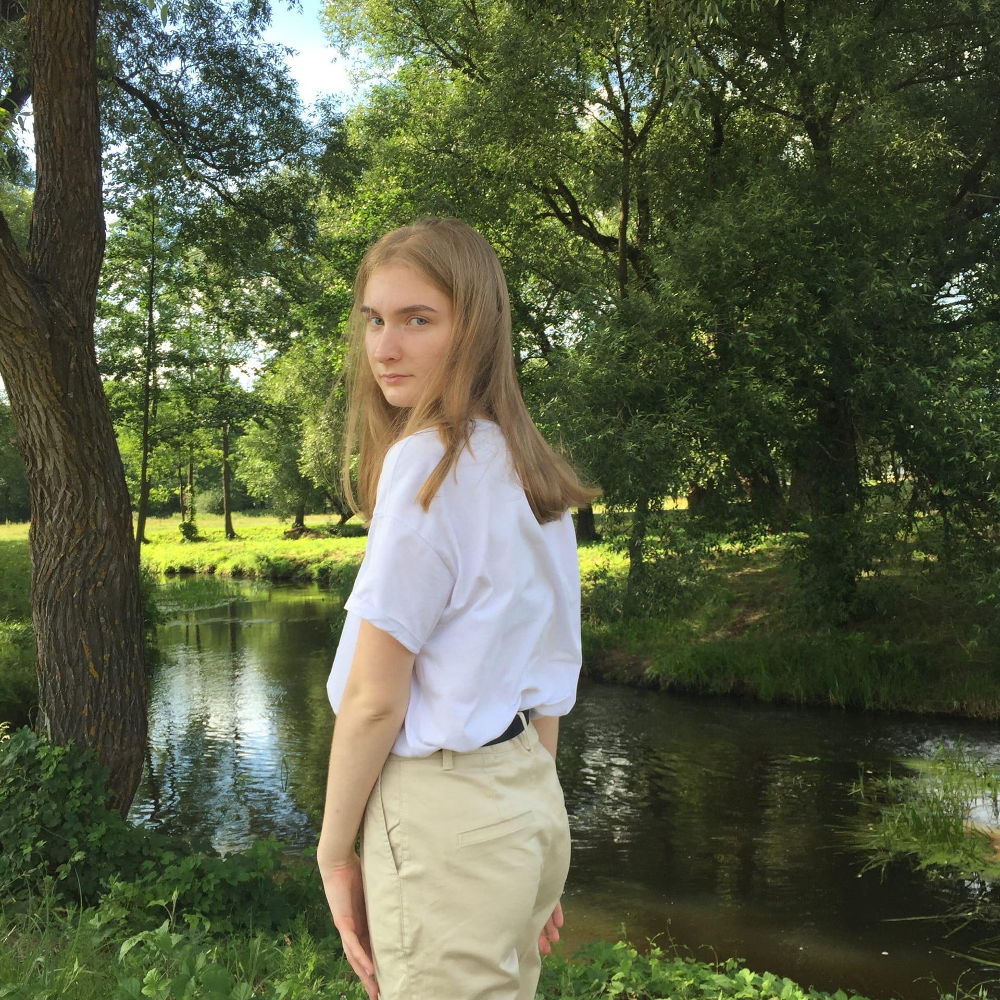

Вы думали, что это картинка из Pinterest? Неа))) Это Юля

Немного фактиков о Юле
Просто обожает печь разные вкусняшки (прям как я!!!)
Любит путешествовать
Читает книжки (самая любимая - "Мальчик в полосатой пижаме" Дж. Бойна)
Очень красивая дата рождения (30.03.2003)
У Юли есть очень миленькая кошечка Оливка
Недавно она была в Бресте (обожаю Брест!!!)
В прошлом году мы с Юлей были однопартницами на английском... Конечно, сейчас она меня променяла на Дашу. Но я каждый раз с трепетом и особой теплотой вспоминаю это время!!!!!!...